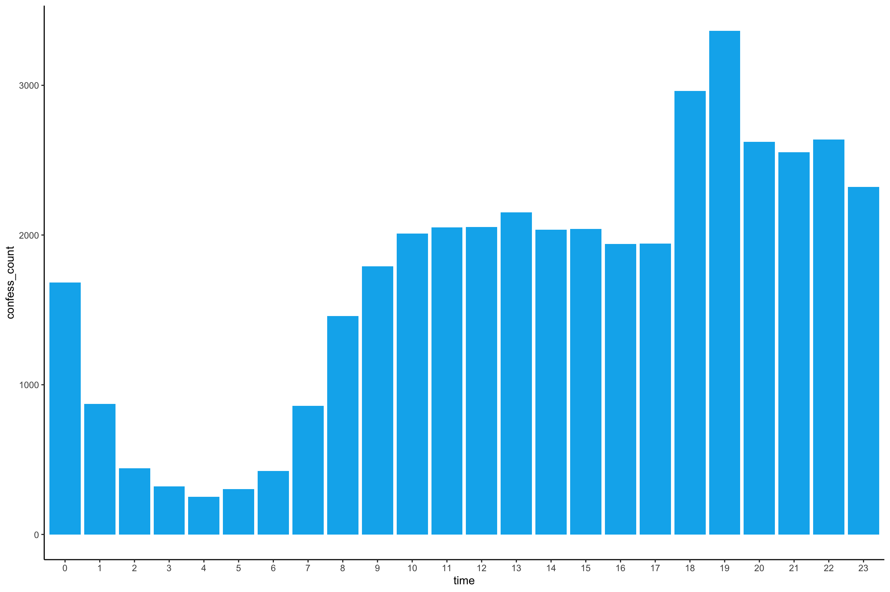

Last updated: 2020-12-29
Checks: 7 0
Knit directory: 03_the-fesshole/
This reproducible R Markdown analysis was created with workflowr (version 1.6.2). The Checks tab describes the reproducibility checks that were applied when the results were created. The Past versions tab lists the development history.
Great! Since the R Markdown file has been committed to the Git repository, you know the exact version of the code that produced these results.
Great job! The global environment was empty. Objects defined in the global environment can affect the analysis in your R Markdown file in unknown ways. For reproduciblity it’s best to always run the code in an empty environment.
The command set.seed(20201219) was run prior to running the code in the R Markdown file. Setting a seed ensures that any results that rely on randomness, e.g. subsampling or permutations, are reproducible.
Great job! Recording the operating system, R version, and package versions is critical for reproducibility.
Nice! There were no cached chunks for this analysis, so you can be confident that you successfully produced the results during this run.
Great job! Using relative paths to the files within your workflowr project makes it easier to run your code on other machines.
Great! You are using Git for version control. Tracking code development and connecting the code version to the results is critical for reproducibility.
The results in this page were generated with repository version 119677c. See the Past versions tab to see a history of the changes made to the R Markdown and HTML files.
Note that you need to be careful to ensure that all relevant files for the analysis have been committed to Git prior to generating the results (you can use wflow_publish or wflow_git_commit). workflowr only checks the R Markdown file, but you know if there are other scripts or data files that it depends on. Below is the status of the Git repository when the results were generated:
Ignored files:
Ignored: .DS_Store
Ignored: .Rhistory
Ignored: .Rproj.user/
Ignored: data/.DS_Store
Untracked files:
Untracked: code/03_load_df.R
Untracked: data/Some code sentiment stop words xl
Untracked: data/fesshole_detailed.rds
Untracked: data/fesshole_index.rds
Untracked: data/fesshole_pairs.rds
Untracked: data/fesshole_pairs_xl.rds
Untracked: data/fesshole_words.rds
Untracked: figure/
Note that any generated files, e.g. HTML, png, CSS, etc., are not included in this status report because it is ok for generated content to have uncommitted changes.
These are the previous versions of the repository in which changes were made to the R Markdown (analysis/03_EDA.Rmd) and HTML (docs/03_EDA.html) files. If you’ve configured a remote Git repository (see ?wflow_git_remote), click on the hyperlinks in the table below to view the files as they were in that past version.
| File | Version | Author | Date | Message |
|---|---|---|---|---|
| Rmd | 119677c | ogorodriguez | 2020-12-29 | Included the count of confessions per month and time of day |
| html | e134e46 | ogorodriguez | 2020-12-26 | Build site. |
| Rmd | fc7cdab | ogorodriguez | 2020-12-26 | Removed a duplicate section already in 02 |
| html | b624bc6 | ogorodriguez | 2020-12-26 | Build site. |
| Rmd | f9000e4 | ogorodriguez | 2020-12-26 | Added new datasets for words, bigrams, and split dates |
| html | 6bd3896 | ogorodriguez | 2020-12-25 | Build site. |
| Rmd | 1a512a5 | ogorodriguez | 2020-12-25 | Updated the Fesshole spreadsheet, added a bit more description to EDA session, and |
| html | 067e4ca | ogorodriguez | 2020-12-19 | Build site. |
| Rmd | 9168d90 | ogorodriguez | 2020-12-19 | Created section 03 EDA |
| html | 63abb87 | ogorodriguez | 2020-12-19 | Build site. |
| Rmd | ac89fcd | ogorodriguez | 2020-12-19 | Content 02 created, and several adjustments to source code as well as the data |
The current status of the working file with the fesshole data is found on the set fesshole_new
fesshole_new %>%
glimpse()Rows: 41,085
Columns: 2
$ timestamp <dttm> 2019-07-04 14:58:08, 2019-07-04 14:58:09, 2019-07-04 14:…
$ confessions <chr> "Sometimes I can't be bothered to use loo roll and I just…The number of rows my differ upon updates done to the file.
One of the first observations we can make is the number of words in each confession. That way we can identify the longest confession, and when it was submitted.
Which one is the longest confession to date.
We can add a word count column that can estimate the number of words per confession using the stringr::str_count() function.
We use [\\w\']+ to identify words with apostrophes taking into account the number of letters after the aposotrophy (see here for reference. )
# Add a column with word counts
fesshole_new %>%
mutate(wordcount_est = stringr::str_count(confessions, '[\\w\']+')) %>%
sample_n(5)# A tibble: 5 x 3
timestamp confessions wordcount_est
<dttm> <chr> <int>
1 2020-07-14 16:45:37 Overheard a colleague chatting shit about h… 31
2 2020-04-23 11:17:24 When I see a fit jogger I always give way t… 29
3 2020-01-02 08:47:03 I’m madly in love with one of my friends an… 35
4 2020-09-09 08:36:15 A South Wales Valleys lass dumped me for no… 51
5 2020-12-15 13:40:12 I've just noticed that the muscles on my ri… 50Now let’s find out the entry with the maximumn number of words
fesshole_new %>%
mutate(wordcount_est = stringr::str_count(confessions, '[\\w\']+')) %>%
slice(which.max(wordcount_est)) %>%
pull()[1] 230And when this entry was submitted…
fesshole_new %>%
mutate(wordcount_est = stringr::str_count(confessions, '[\\w\']+')) %>%
slice(which.max(wordcount_est)) %>%
select(timestamp) %>%
pull()[1] "2019-09-19 11:58:04 UTC"It was submitted on 2019-09-19 11:58:04
Here’s the text of the longest confession: a very juicy account of identity theft, gay politicians, lots of alcohol and the Brexit.
fesshole_new %>%
mutate(wordcount = stringr::str_count(confessions, '[\\w\']+')) %>%
slice(which.max(wordcount)) %>%
select(confessions) %>%
pull()[1] "I worked for a major UK political party 3 years ago. On the night of the results of the EU referendum vote, there were parties going on for the various campaigns. One of the MPs left their ID badge for the Commons on their desk for some reason.\n\nThis particular MP had a passing resemblance to myself. They were quite a new MP and not front line. On a whim, I decided to borrow this ID badge and take it out with me, and see if I could convince anyone I was said MP.\n\nI went to a party (making sure it wasn't one this particular MP was attending), and I was passing as this MP with everyone I was speaking to. Nobody seemed to question why I was wearing the badge. I kept drinking, and I forgot the rest of the night.\n\nI woke up, hung over, in a hotel room the next morning. I was worried I'd lost the badge, but it was still round my neck. However, I found a note next to my bed written on the hotel's letterheaded paper.\n\n\"Last night was great, you were lush in bed. Had no idea you were gay though.\"\n\nIt turns out that I'd fucked a prominent gay man involved in politics, and now they think this particular MP is in the closet and has had sex with them."Oh wow. This is a very juicy account of identity theft, gay politicians, lots of alcohol and the Brexit.
The paragraph contains line breaks \n that somehow made it into the calculation of the number of words. That is why the number of words is marked as estimate.
These are the top 10 longest confessions.
fesshole_new %>%
mutate(wordcount = stringr::str_count(confessions, '[\\w\']+')) %>%
arrange(desc(wordcount)) %>%
head(10)# A tibble: 10 x 3
timestamp confessions wordcount
<dttm> <chr> <int>
1 2019-09-19 11:58:04 "I worked for a major UK political party 3 yea… 230
2 2019-07-04 15:13:04 "In third grade, I cheated on my history exam.… 173
3 2019-07-10 21:20:41 "Saw a group of pished English lads who I thou… 136
4 2019-07-10 17:51:05 "I once accidentally set fire to a pretty heft… 125
5 2019-07-10 18:45:03 "One time I was out of a building that had two… 117
6 2019-07-05 00:28:06 "My wife and I don't have children and we neve… 115
7 2019-09-19 15:14:00 "Once went drinking with mates and my sister a… 110
8 2019-09-16 21:14:21 "I came home from school to find the dog had d… 109
9 2019-09-14 01:19:07 "In highschool (UK), thanks to some then undia… 108
10 2019-07-04 22:46:48 "My name is Frank. I'm a 27-year-old Englishma… 100There is a lot of counting going on when we do EDA.
For instance, we can ask how many confessions were submitted in a given day, through the months, and also in years 2019 and 2020 so far.
We could start by counting the number of confessions submitted every month ever since the beginning of the account in July 2019.
Let’s get the table count for each month
fesshole_detailed %>%
count(confess_id, month, year) %>%
group_by(year, month) %>%
summarise(sum(n))# A tibble: 18 x 3
# Groups: year [2]
year month `sum(n)`
<dbl> <ord> <int>
1 2019 July 346
2 2019 August 5
3 2019 September 1121
4 2019 October 2185
5 2019 November 1929
6 2019 December 2833
7 2020 January 3078
8 2020 February 2367
9 2020 March 2314
10 2020 April 2559
11 2020 May 2555
12 2020 June 2270
13 2020 July 3028
14 2020 August 3160
15 2020 September 2790
16 2020 October 2964
17 2020 November 3232
18 2020 December 2349Now let’s see it as a bar chart
fesshole_detailed %>%
count(timestamp, month, year) %>%
group_by(year, month) %>%
summarise(confess_count = sum(n)) %>%
ungroup() %>%
ggplot(aes(month, confess_count, fill = month)) +
geom_col() +
facet_wrap(~ year) +
theme(axis.text.x = element_text(angle = 90))
Let’s find ou when people generally send the most confessions. We can guess it is the nighttime.
fesshole_detailed %>%
mutate(time = as_factor(lubridate::hour(timestamp))) %>%
count(time) %>%
rename(confess_count = n) %>%
ggplot(aes(time, confess_count)) +
geom_col(fill = "deepskyblue2") +
theme_classic()As we can see, indeed the most confession are during 7pm, when people are out of work, or school.
Being the lowest number of submissions sent at 4am
sessionInfo()R version 4.0.3 (2020-10-10)
Platform: x86_64-apple-darwin17.0 (64-bit)
Running under: macOS Big Sur 10.16
Matrix products: default
BLAS: /Library/Frameworks/R.framework/Versions/4.0/Resources/lib/libRblas.dylib
LAPACK: /Library/Frameworks/R.framework/Versions/4.0/Resources/lib/libRlapack.dylib
locale:
[1] en_US.UTF-8/en_US.UTF-8/en_US.UTF-8/C/en_US.UTF-8/en_US.UTF-8
attached base packages:
[1] stats graphics grDevices utils datasets methods base
other attached packages:
[1] knitr_1.30 tidytext_0.2.6.9000 plotly_4.9.2.2
[4] here_1.0.0 googlesheets4_0.2.0 yardstick_0.0.7
[7] workflows_0.2.1 tune_0.1.2 rsample_0.0.8
[10] recipes_0.1.15 parsnip_0.1.4 modeldata_0.1.0
[13] infer_0.5.3 dials_0.0.9 scales_1.1.1
[16] broom_0.7.2 tidymodels_0.1.2 forcats_0.5.0
[19] stringr_1.4.0 dplyr_1.0.2 purrr_0.3.4
[22] readr_1.4.0 tidyr_1.1.2 tibble_3.0.4
[25] ggplot2_3.3.2 tidyverse_1.3.0 workflowr_1.6.2
loaded via a namespace (and not attached):
[1] googledrive_1.0.1 colorspace_2.0-0 ellipsis_0.3.1 class_7.3-17
[5] rprojroot_2.0.2 fs_1.5.0 rstudioapi_0.13 farver_2.0.3
[9] listenv_0.8.0 furrr_0.2.1 SnowballC_0.7.0 prodlim_2019.11.13
[13] fansi_0.4.1 lubridate_1.7.9.2 xml2_1.3.2 codetools_0.2-16
[17] splines_4.0.3 jsonlite_1.7.1 pROC_1.16.2 dbplyr_2.0.0
[21] compiler_4.0.3 httr_1.4.2 backports_1.2.0 lazyeval_0.2.2
[25] assertthat_0.2.1 Matrix_1.2-18 cli_2.2.0 later_1.1.0.1
[29] htmltools_0.5.0 tools_4.0.3 gtable_0.3.0 glue_1.4.2
[33] Rcpp_1.0.5 cellranger_1.1.0 DiceDesign_1.8-1 vctrs_0.3.6
[37] iterators_1.0.13 timeDate_3043.102 gower_0.2.2 xfun_0.19
[41] globals_0.14.0 rvest_0.3.6 lifecycle_0.2.0 pacman_0.5.1
[45] future_1.20.1 MASS_7.3-53 ipred_0.9-9 hms_0.5.3
[49] promises_1.1.1 parallel_4.0.3 yaml_2.2.1 rpart_4.1-15
[53] stringi_1.5.3 tokenizers_0.2.1 foreach_1.5.1 lhs_1.1.1
[57] lava_1.6.8.1 rlang_0.4.9 pkgconfig_2.0.3 evaluate_0.14
[61] lattice_0.20-41 labeling_0.4.2 htmlwidgets_1.5.2 tidyselect_1.1.0
[65] parallelly_1.21.0 plyr_1.8.6 magrittr_2.0.1 R6_2.5.0
[69] generics_0.1.0 DBI_1.1.0 pillar_1.4.7 haven_2.3.1
[73] whisker_0.4 withr_2.3.0 survival_3.2-7 nnet_7.3-14
[77] janeaustenr_0.1.5 modelr_0.1.8 crayon_1.3.4 utf8_1.1.4
[81] rmarkdown_2.5 grid_4.0.3 readxl_1.3.1.9000 data.table_1.13.4
[85] git2r_0.27.1 reprex_0.3.0 digest_0.6.27 httpuv_1.5.4
[89] munsell_0.5.0 GPfit_1.0-8 viridisLite_0.3.0